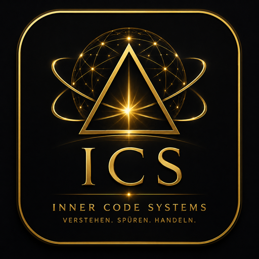
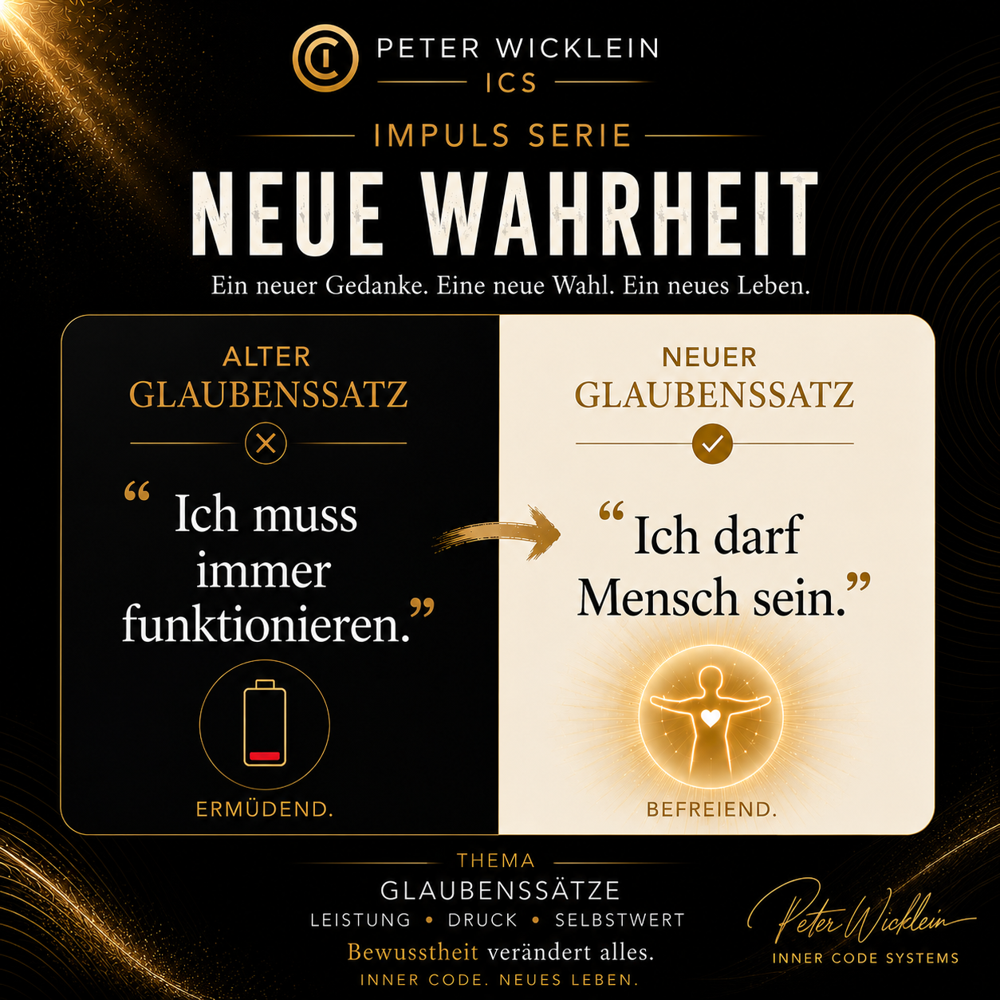
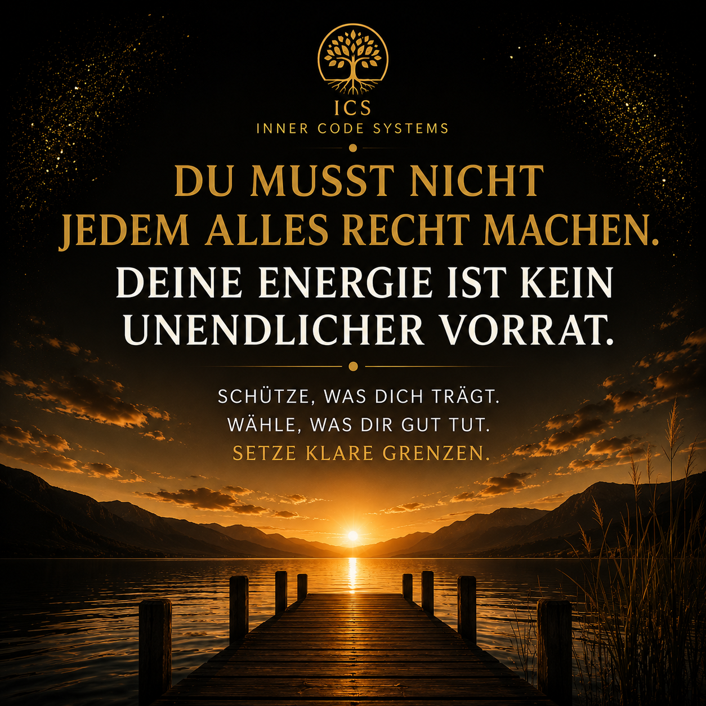
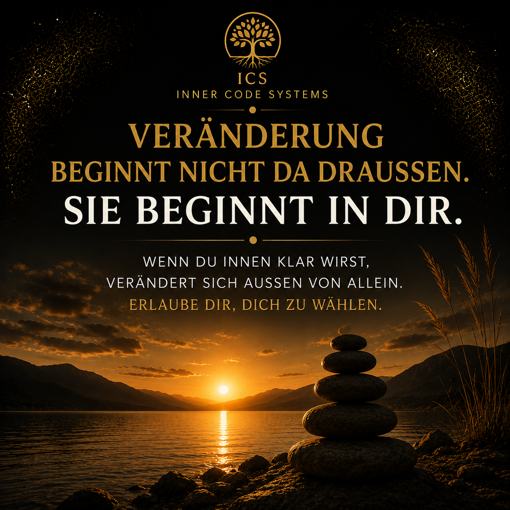
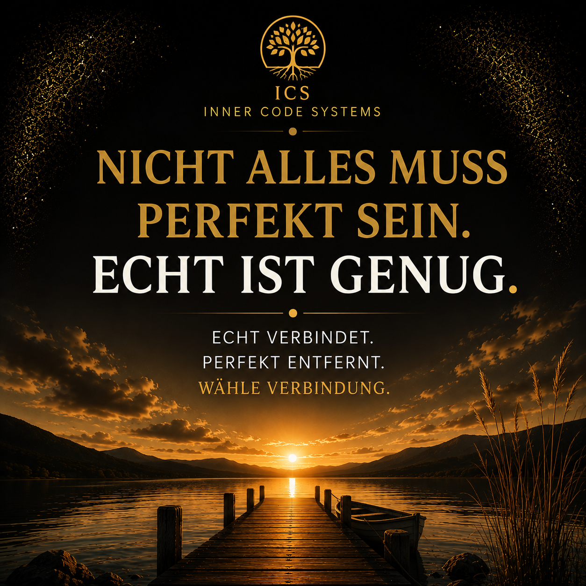

Was darf heute leichter werden?
INNER CODE SYSTEMS
Willkommen bei ICS.
Dein persönlicher Raum für Klarheit, Bewusstsein und Veränderung.
Wie darf ich dich nennen?
Dein Vorname macht deine ICS-Welt persönlicher. Er wird nur auf diesem Gerät gespeichert.

ICS
INNER CODE SYSTEMS
Alles beginnt mit deiner Aufmerksamkeit.
VERSTEHEN. SPÜREN. HANDELN.
DU MUSST NICHT WISSEN, WO DU ANFANGEN SOLLST
Wie geht es dir gerade?
Sag ICS, was gerade bei dir los ist. Du bekommst einen passenden nächsten Schritt.
DEIN TAGESIMPULS
CODE 01
Wahrnehmen, was gerade wirklich da ist.
Nimm dir einen Moment. Atme ruhig und frage dich: Was braucht heute meine bewusste Aufmerksamkeit?
MEIN ICS
Willkommen zurück, Peter.
DEINE WISSENSBIBLIOTHEK
ICS Nachschlagewerk
Verstehen. Nachschlagen. Zusammenhänge entdecken.
ICS AUF DEINEM GERÄT
Deine ICS-Welt immer griffbereit.
Du kannst ICS direkt auf deinem Startbildschirm installieren und wie eine App öffnen.
Gehe dazu auf Mehr → ICS installieren.
ICS WISSENSBIBLIOTHEK
ICS Nachschlagewerk
Verstehen. Nachschlagen. Zusammenhänge entdecken.
DAS NACHSCHLAGEWERK WÄCHST
Weitere Bereiche folgen.
Die ICS Wissensbibliothek wird Schritt für Schritt um weitere Themen und Zusammenhänge erweitert.
DEIN PERSÖNLICHER BEREICH
Mein ICS
Deine Entwicklung. Deine Werkzeuge. Dein Weg.
Deine Entwicklung auf einen Blick
Deine letzten ICS-Aktivitäten erscheinen hier.
Deine aktuelle Lebensphase erscheint hier.
WIE GEHT ES DIR GERADE?
WIE VIEL IST GERADE WIRKLICH MÖGLICH?
Bitte wähle 1, 3 oder 10 Minuten aus.
DAS FÄLLT AUF
Dieses Thema taucht bei dir wiederholt auf.
Wenn ein Zustand häufiger zurückkehrt, kann es sinnvoll sein, nicht nur den Moment zu verändern, sondern genauer hinzuschauen.
DEINE ICS REPORTS
Welcher Bereich ruft dich gerade?
Starte kostenlos oder entdecke deine persönlichen Reports für mehr Klarheit über dich, deine Beziehungen und deinen Weg.
KOSTENLOS STARTEN
Human Design Basic Report
Kostenloser Einstieg in dein Human Design.
›
△
Human Design Micro Challenge
5 Tage · kostenlos · Entdecke dein Potenzial.
›
DEINE PERSÖNLICHEN REPORTS
Business Pro Report
Dein persönlicher Business-Weg, Stärken und Potenziale.
›
◇
Lebensaufgabe Report
Richtung, Potenzial und innerer Weg.
›
◇
Astrologie Report
Deine astrologische Signatur und persönliche Ausrichtung.
›
◇
Beziehungsreport
Dynamik, Verbindung und gegenseitiges Verständnis.
›
◇
Kinderreport
Potenziale, Bedürfnisse und individuelle Entwicklung.
›
◇
Blockadenlöser Report
Muster erkennen und Blockaden verstehen.
›
◇
Human Design Coaching Report
Dein Design verstehen und praktisch leben.
›
DEIN PERSÖNLICHER BEREICH
Meine Erkenntnisse
Was du über dich erkannt hast, darf sichtbar werden.
NEUESTE ERKENNTNISSE
Was gerade wichtig ist.
Deine zuletzt gespeicherte Erkenntnis erscheint hier.
AUS DEM JOURNAL
Deine Gedanken und Beobachtungen.
Dein zuletzt gespeicherter Journal-Eintrag erscheint hier.
RESET & AUSWERTUNG
Deine Muster verstehen.
Erkenntnisse aus RESET Check, Auswertung und Gegenpol Generator werden hier gebündelt.
DEIN RAUM FÜR REFLEXION
Journal
Mach sichtbar, was sich in dir verändert.
ABEND-CHECK-IN
Was war heute wichtig?
0/600
DEINE EINTRÄGE
Dein Weg wird sichtbar.
Dein erster gespeicherter Eintrag erscheint hier.
DEINE ICS-WELTEN
Was brauchst du gerade?
Wähle den Bereich, der dich heute ruft.
DU MUSST NICHT WISSEN, WO DU ANFANGEN SOLLST
Führe mich
Sag ICS, was gerade bei dir los ist. Du bekommst einen passenden nächsten Schritt.
DU WEISST, WOHIN DU MÖCHTEST
Ich wähle meinen Weg
Wähle direkt den Bereich, in den du jetzt eintauchen möchtest.
WEITERE ICS WELTEN
DEIN WEG · DEINE WAHL
Wohin möchtest du gerade?
Du weißt, was du brauchst. Wähle deinen Bereich direkt.
INNER CODE · VERSTEHEN
Deine innere Welt
Erkenne Gedanken, Glaubenssätze und Muster und entdecke neue Perspektiven.
INNER CODE · GLAUBENSSÄTZE
Was glaubst du über dich?
Erkenne innere Sätze, die dein Denken und Handeln beeinflussen, und öffne Raum für eine neue Sicht.
DEIN SATZ
Welcher Gedanke taucht immer wieder auf?
ICS REFLEXION
Schau einen Moment genauer hin
NEUE PERSPEKTIVE
VOM MUSTER IN DEN GESTALTUNGSMODUS
Was möchtest du stattdessen bewusst wählen?
Du hast erkannt, was im Hintergrund wirkt. Jetzt darf daraus eine neue bewusste Entscheidung entstehen.
DEIN NÄCHSTER SCHRITT
Wie kannst du deine neue Wahl heute leben?
Wähle einen kleinen, konkreten Schritt, den du wirklich umsetzen kannst.
DEIN NÄCHSTER SCHRITT
Du möchtest dieses Muster weiter verändern?
Mit dem kostenlosen 7-Tage RESET kannst du deine Erkenntnis Schritt für Schritt in deinen Alltag bringen.
7-Tage RESET entdecken →BODY CODE · SPÜREN
Dein Körper zeigt dir den Weg
Nimm wahr, was dein Körper und deine Energie dir gerade zeigen.
BODY CODE · KÖRPERSIGNALE
Was zeigt dir dein Körper?
Wähle ein Körpersignal, nimm bewusst wahr, reflektiere mögliche Zusammenhänge und entdecke einen kleinen nächsten Schritt.
Körpersignale können viele körperliche und medizinische Ursachen haben. Neue, starke, anhaltende oder unklare Beschwerden bitte medizinisch abklären lassen. Die Inhalte dienen der Selbstreflexion.
❤️ BODY CODE · WAHRNEHMEN
🧠 INNER CODE · REFLEKTIEREN
🔥 ACTION CODE · KLEINE HANDLUNG
🔄 RESET · DANACH PRÜFEN
DEIN NÄCHSTER SCHRITT
Was braucht dein Körper jetzt?
Wenn du dein Körpersignal bewusster wahrgenommen hast, kannst du als Nächstes tiefer in den Body Code gehen.
ACTION CODE · HANDELN
Aus Klarheit wird Bewegung
Wähle einen nächsten Schritt, der dich wirklich ins Handeln bringt.
ACTION CODE · FOKUS
Was ist jetzt dein nächster Schritt?
Nicht der ganze Weg. Nur das, was jetzt wirklich möglich und wichtig ist.
1 · KLARHEIT
Was beschäftigt dich gerade am meisten?
2 · MÖGLICHKEIT
Wie viel ist gerade wirklich möglich?
3 · ENTSCHEIDUNG
Was kannst du jetzt konkret tun?
DEIN AKTUELLER SCHRITT
Dein nächster Schritt
DEINE ENTSCHEIDUNG
DEIN RAHMEN
ACTION CODE · VERLAUF
Meine Schritte
Hier siehst du deine letzten Entscheidungen und was du bereits umgesetzt hast.
DEIN VERLAUF
Deine letzten Schritte
0
Gesamt
0
Erledigt
0
Offen
Noch keine gespeicherten Schritte.
RESET · INTEGRIEREN
Zurück zu dir
Unterbrich alte Muster, richte dich neu aus und integriere, was dich wirklich weiterbringt.
NEUE WAHRHEIT
Was darf heute wahr werden?
Wähle eine Wahrheit, die dich im Moment besonders anspricht.
NEUE WAHRHEIT
Deine neue Wahrheit
BILD

REFLEXION
Wo darfst du dir heute erlauben, einfach Mensch zu sein?
INTEGRATION
Lege eine Hand auf dein Herz und atme dreimal bewusst ein und aus.
ICS ENERGIE
Wie viel ist gerade wirklich möglich?
Erst wahrnehmen. Dann einen passenden kleinen Schritt wählen.
ICS ENERGIE-BASIS
7 Grundlagen
- Tageslicht
- Trinken
- Ernährung & Protein
- Mikro-Bewegung
- Bewegung nach dem Essen
- Kraft & Muskulatur
- Regeneration & Schlaf
ENERGIE-CHECK · VORHER
Wie geht es dir gerade?
ENERGIE-IMPULS
Unterstützt heute:
PASSENDER NÄCHSTER IMPULS
ENERGIE-CHECK · NACHHER
Was nimmst du jetzt wahr?
DEINE WAHRNEHMUNG
Dein Vorher/Nachher
EINEN SCHRITT TIEFER
Möchtest du verstehen, was dahinterliegt?
Nicht nur verändern. Verstehen, was dich gerade in diesem Zustand hält.
DEIN NÄCHSTER SCHRITT
Gib deiner Energie etwas Raum.
Du hast gerade etwas für deine Energie getan. Nimm die Veränderung wahr und beobachte, wie sich deine Energie mit der Zeit entwickelt.
DEIN ENERGIE-VERLAUF
Deine letzten Energie-Checks
ICS ERKENNTNIS
Nach einigen Checks zeigt dir ICS hier erste persönliche Muster.
ICS EMPFEHLUNG
Dein nächster sinnvoller Schritt
Mit deinem Verlauf kann ICS dir hier zunehmend persönlichere Empfehlungen geben.
Dein erster abgeschlossener Energie-Check erscheint hier.
ICS FÜHRT DICH
Was ist gerade bei dir los?
Wähle, was deiner aktuellen Situation am nächsten kommt.
WÄHLE EIN BEISPIEL
Was möchtest du mit ICS erleben?
Wähle eine Beispielsituation. ICS zeigt dir, wie eine persönliche Begleitung aussehen kann.
ICS EMPFEHLUNG
Dein nächster sinnvoller Schritt
ICS richtet deine Aufmerksamkeit auf das, was dich gerade unterstützen kann.
DEIN PASSENDER BEREICH
DEINE LETZTE ERFAHRUNG
WAS SICH BEI DIR WIEDERHOLT ZEIGT
ICS ENERGIE
Mein Energie-Verlauf
Deine bisherigen Checks, Veränderungen und Wahrnehmungen.
DEINE HISTORIE
Alle Energie-Checks
Noch keine gespeicherten Energie-Checks.
ICS IMPULSE
Was darf dich heute begleiten?
Gedanken, Bilder und Impulse für mehr Klarheit, Bewusstsein und neue Perspektiven.
DEIN IMPULS · 001
REFLEXION
Was ist gerade wirklich möglich?
DEIN NÄCHSTER SCHRITT
Wähle eine Sache, die du heute tatsächlich umsetzen kannst.
INNER CODE
Impulse für Klarheit
Gedanken, die dir helfen, Muster und Perspektiven neu zu sehen.
IMPULS · 004
REFLEXION
Was hältst du gerade fest, obwohl es dich mehr belastet als trägt?
DEIN NÄCHSTER SCHRITT
Entscheide dich heute bewusst für eine Sache, die du nicht weiter mittragen musst.
IMPULS · 008
REFLEXION
Mit wem vergleichst du dich gerade – und was macht dieser Vergleich mit dir?
DEIN NÄCHSTER SCHRITT
Richte deinen Blick heute auf deinen eigenen Weg und einen Fortschritt, den du bereits gemacht hast.
IMPULS · 010
REFLEXION
Wo glaubst du, längst weiter sein zu müssen?
DEIN NÄCHSTER SCHRITT
Lass für heute den Zeitdruck los und frage dich: Was ist jetzt mein stimmiger nächster Schritt?
BODY CODE
Impulse für Wahrnehmung
Spüre, was dein Körper und deine Energie dir gerade zeigen.
IMPULS · 002
REFLEXION
Wie viel ist heute wirklich möglich, wenn du ehrlich auf deine Energie hörst?
DEIN NÄCHSTER SCHRITT
Wähle einen kleinen Schritt, der zu deiner aktuellen Energie passt – nicht zu deinen Erwartungen.
IMPULS · 005

REFLEXION
Wo verbrauchst du gerade Energie, weil du es anderen recht machen möchtest?
DEIN NÄCHSTER SCHRITT
Setze heute an einer Stelle eine kleine klare Grenze und beobachte, wie sich das in deinem Körper anfühlt.
ACTION CODE
Impulse fürs Handeln
Kleine Gedanken, die dich wieder in Bewegung bringen.
IMPULS · 001
REFLEXION
Was wäre heute ein einziger Schritt, der wirklich genügt?
DEIN NÄCHSTER SCHRITT
Wähle eine Sache. Mach sie bewusst. Alles andere darf für heute warten.
IMPULS · 006
REFLEXION
Worauf richtest du deine Aufmerksamkeit gerade – und bringt dich das dorthin, wo du hinwillst?
DEIN NÄCHSTER SCHRITT
Entscheide dich für einen Fokus und gib ihm heute bewusst deine nächste Handlung.
RESET
Impulse für Neuausrichtung
Unterbrich alte Reaktionen und richte dich bewusst neu aus.
IMPULS · 003
REFLEXION
Wo erzeugst du gerade Druck, weil etwas schneller geschehen soll?
DEIN NÄCHSTER SCHRITT
Lass für einen Moment das „Wann?“ los und richte deine Aufmerksamkeit auf das, was du heute beeinflussen kannst.
IMPULS · 007

REFLEXION
Was möchtest du im Außen verändern, das vielleicht zuerst eine Entscheidung in dir braucht?
DEIN NÄCHSTER SCHRITT
Wähle heute eine innere Haltung, aus der heraus du anders reagieren möchtest.
IMPULS · 009

REFLEXION
Wo hält dich der Anspruch an Perfektion gerade davon ab, weiterzugehen?
DEIN NÄCHSTER SCHRITT
Erlaube dir heute eine gute, unperfekte Lösung und geh damit einen Schritt weiter.
ICS MEDITATIONEN
Dein Raum für innere Ausrichtung.
Wähle die Meditation, die dich gerade unterstützt.
MEDITATIONEN
Gedanken loslassen
Abstand gewinnen und wieder in deine eigene Klarheit kommen.
MEDITATIONEN
Körper wahrnehmen
Spüre, was dein Körper dir gerade wirklich zeigt.
KÖRPER WAHRNEHMEN
Körper wahrnehmen
Ankommen, spüren und deinem Körper wieder bewusst zuhören.
CA. 20 MINUTEN
Dein Körper darf wieder gehört werden.
Wahrnehmen. Spüren. Zuhören. Ohne etwas verändern zu müssen.
GEDANKEN LOSLASSEN
Gedanken loslassen
Abstand gewinnen und wieder in deine eigene Klarheit kommen.
CA. 17 MINUTEN
Du musst nicht jedem Gedanken folgen.
Wahrnehmen. Abstand gewinnen. Loslassen. Deine Aufmerksamkeit darf wieder zu dir zurückkommen.
MEDITATIONEN
Zur Ruhe kommen
Ankommen. Atmen. Den inneren Raum wieder spüren.
ZUR RUHE KOMMEN
Ankommen
Zur Ruhe kommen und wieder bei dir ankommen.
CA. 19 MINUTEN
Einfach hier sein.
Atmen. Spüren. Loslassen. Für einen Moment nichts erreichen müssen.
RESET MEDITATIONEN
Zurück in deine eigene Klarheit.
Wähle die Meditation, die dich gerade unterstützt.
ICS MEDITATION
RESET Meditation
Vom Reagieren zurück ins bewusste Gestalten.
CA. 17 MINUTEN
Komm zurück zu dir.
Realisieren. Erkennen. Selbst wahrnehmen. Entscheiden. Transformieren.
DEIN NÄCHSTER SCHRITT
Was ist jetzt anders?
Nimm einen Moment wahr, was sich in dir verändert hat. Wenn du möchtest, kannst du deine Wahrnehmung direkt festhalten.
INNER CODE SYSTEMS
Mehr entdecken
Vertiefe deinen persönlichen ICS-Weg.